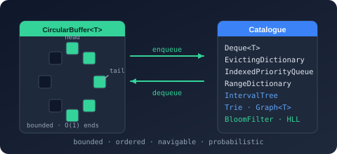

Bodu.Collections.Specialized Namespace
- Package
-
Bodu.Collections 1.3.0

Purpose
Bodu.Collections.Specialized holds the members of the Bodu.Collections package that serve a specialised purpose rather than acting as general-purpose containers. One type lives here today: BitSet, a packed bit set over dense non-negative integers.
What sets it apart is independence. It references nothing else in the package, and nothing else in the package references it - unlike every other non-generic type in Bodu.Collections.Generic, which is either a collection in its own right or a policy or option satellite of one. Separating it keeps the general catalogue cohesive without fragmenting the package: Bodu.Collections still ships everything, and reaching for it costs a second using.
The namespace follows System.Collections.Specialized in intent - structures tuned to a narrow job rather than a general shape - though not in content: nothing here is a string-keyed dictionary.
The RFC 6962 Merkle tree that formerly shared this namespace now ships as MerkleTree in the Bodu.Security.Cryptography package - see the Merkle trees and proofs guide.
Static documentation
- Bit set - dense integer membership as packed bits, and when to prefer it over the BCL
BitArray. - Bodu.Collections introduction - the package this type ships in, and where it sits among its namespaces.
Key types
- BitSet - growable packed bit set with Java
BitSetsemantics (NextSetBit/NextClearBit/Cardinality, in-placeAnd/Or/Xor/AndNot). See the bit set guide.
Example
using Bodu.Collections.Specialized;
// Dense integer membership as packed bits - Java BitSet semantics.
var flags = new BitSet();
flags.Set(4);
flags.Set(9);
int first = flags.NextSetBit(0); // 4
int count = flags.Cardinality; // 2
Notes
BitSetgrows on write, not on read.SetandFlipextend the backing words as needed; aGetpast the current length returnsfalserather than throwing or growing, so probing a sparse high index costs nothing. Negative indices are rejected.BitSetis not thread-safe for mutation. It requires external synchronization if written concurrently.- See also: the bit set guide and the Bodu.Collections introduction for the full scenario table.
Classes
- BitSet
Represents a growable set of non-negative integers stored as a packed bit array, following the semantics of the Java
BitSetclass: writes beyond the current capacity grow the storage automatically, and reads beyond the current capacity report the bit as clear rather than throwing.
Structs
- BitSet.Enumerator
Enumerates the set-bit indices of a BitSet in ascending order without allocating.